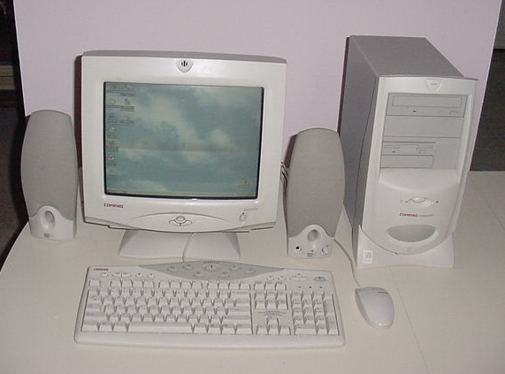
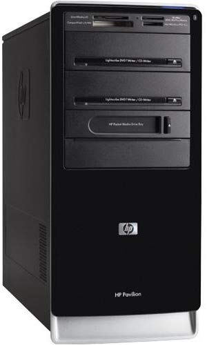
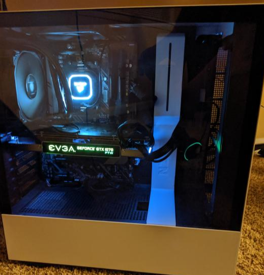

I've always enjoyed building comptuers ever since I was young. My father started me out with a prebuilt computer from compusa and I would play games like Unreal Tournament and Earth and Beyond. Though at the time this beast could play anything at the time, eventually, I upgraded to more modern prebuilts and then built my own.
It was actually hard to find infomation on my first computer as its been almost 20 years now. This computer was kind of the flash point of me getting used to using computers on a daily baises.
| CPU | Memory | Graphics Card | Motherboard | Case | OS | Can it run Crysis? | Price |
|---|---|---|---|---|---|---|---|
| Probably a Penteium / Athlon @ 200 MHz | Around 125Mb | Inagrated Graphics | Unknown | Vanilla Metal | Windows 98 | No | ~$600 (inflated) |
Ah, this was the first computer I began to modify, with Core 2 Duo and 2 Gigs of ram this was the next best thing. A year later I put a GTX 260 in this even though the overall computer preformance was garbage.
| CPU | Memory | Graphics Card | Motherboard | Case | OS | Can it run Crysis? | Price |
|---|---|---|---|---|---|---|---|
| >2.2 GHz Intel Core 2 Duo E4500 dual-core processor | 2 GB RAM (8 GB max) | Inagrated Graphics (Upgraded to GTX 260) | Unknown | Silver/Black | Windows XP/Vista | No, but I could play Farcry on the lowest settings | ~$500 |
This is my current PC and my 3rd built computer unlike the custom prebuilts above. This PC was a long time need update from my previous build which was a i5/gtx 970/8GB Ram setup. I spent most of this money on the case and cpu which sports a Ryzen 5 3600x and a GTX 1070 That was Donated by a friend. This was probably the best build I've ever done. This Hoss of a PC can run everything at the moment and is my pride and joy.
| CPU | Memory | Graphics Card | Motherboard | Case | OS | Can it run Crysis? | Price |
|---|---|---|---|---|---|---|---|
| Ryzen 5 3600X @ 3.6GHz Six core | 2x8 G.SKILL Ripjaws V Series 16GB DDR4 | EVGA GTX 1070 FTW 8gb GDDR5 | ASRock X570 PHANTOM GAMING 4 | White /w Glass Panel | Windows 10 | Yes | ~1000 |